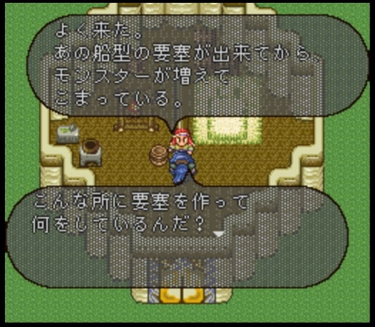

ノーマッド
はじめに
ここではロマサガ2のクラス、ノーマッドについて記載していきたいと思います。
ノーマッド（女）の詳細は、以下のリンクから飛んでください。
ノーマッド（男）と、ノーマッドに関係のある七英雄：ボクオーンについては今後追記予定です
- ノーマッド（女）の詳細
- ノーマッド（男）の詳細（執筆中）
- ボクオーンの詳細（執筆中）
ノーマッドがいる場所
ノーマッドは以下マップの羽のある地域（ステップ）にいます。
ステップの内部マップは以下。
ステップの詳細マップは以下。真ん中辺りにある地上戦艦の中にはボクオーンがいます。左下に小さく見えるのがノーマッドの村です。
あんまりよくわかってないんですけど、ノーマッドの村ってモンゴルの移動式住居みたいなものなんですかね？
※写真は環境にあわせた世界の家づくり～モンゴル、インドネシア、コンゴ編より抜粋
ノーマッドの村の中はこんな感じです。真ん中の家にはノーマッド（男）が、右下の家にはノーマッド（女）がいます。
仲間にしていない状態のノーマッド（女）のセリフはこれ。
実際、長城の見張りに話しかけても入れてくれない。
仲間にしていない状態でノーマッド（男）に話しかけると、地上戦艦の話をし始める。この地上戦艦には七英雄の一人、ボクオーンがいます。


先制攻撃しようとするが、突如動き出す地上戦艦にビックリして逃げ出してしまう。
キャラクター詳細
ノーマッド（男）、ノーマッド（女）を仲間にするためには、ステップの地上戦艦にいるボクオーンを倒す必要があります。
ノーマッド（女）について、より詳細な情報を以下リンク先に整理しています。
ついでにロマサガ2以外（インサガやロマサガRS）でのノーマッド（女）の情報も記載しています。
ノーマッド（男）、ボクオーンについては今後追記予定。
- ノーマッド（女）の詳細
- ノーマッド（男）の詳細（執筆中）
- ボクオーンの詳細（執筆中）